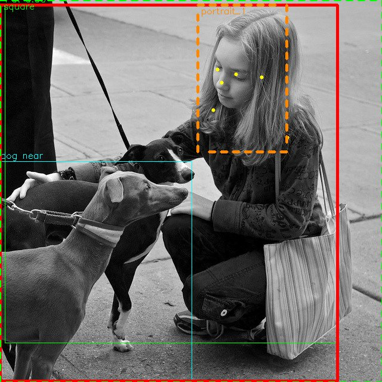
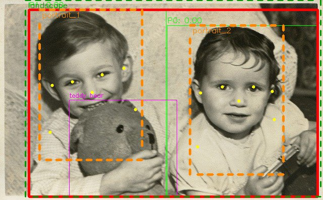
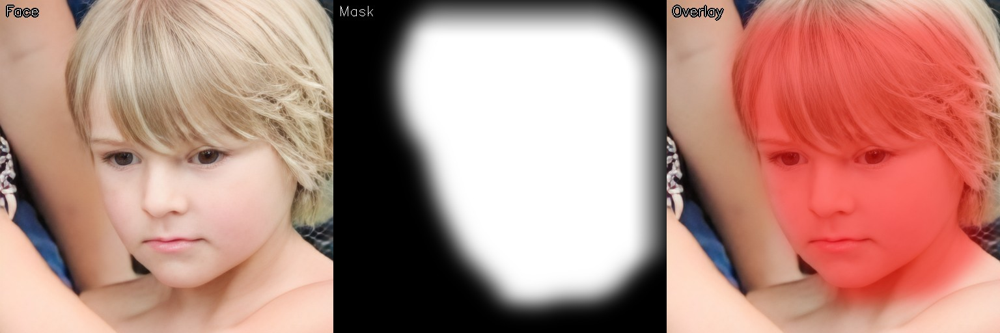
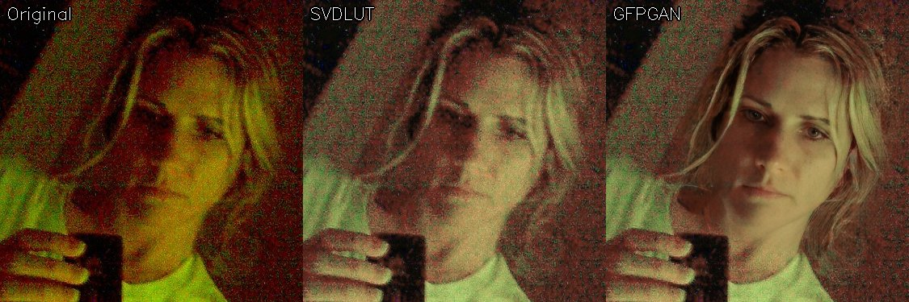

Нейросеть находит каждого человека, животное и предмет на снимке и автоматически кадрирует во все форматы — горизонтальный, вертикальный, квадрат. Старые или нечёткие фото? Встроенное нейро-улучшение подтянет детали и восстановит лица. Бесплатно, офлайн, для Windows. Закинул папку с фотками — получил готовый результат.
Скачать бесплатно Канал в Telegram — новости и вопросы
Канал в Telegram — новости и вопросы
ФотоРезка использует сразу несколько нейросетей, чтобы понять что происходит на снимке: определить кто в кадре, выделить людей, животных и предметы, найти где расположено каждое лицо — и выбрать наилучший кадр для каждого портрета.
YOLO находит всех людей, животных и предметы на снимке. YOLO Pose определяет позу каждого человека — глаза, уши, плечи — чтобы точно рассчитать область портрета.
Зелёные рамки — обнаруженные объекты, жёлтые точки — ключевые точки позы, оранжевый пунктир — зона портрета
ФотоРезка умеет находить группы близко расположенных людей и автоматически вырезать как индивидуальные, так и групповые портреты. Каждый человек получает свой отдельный кадр.
Красная рамка — общая область. Оранжевый пунктир — индивидуальные портреты каждого ребёнка. Зелёный пунктир показывает что из этого снимка получится вырезать кадр 3:2
Для восстановления лиц ParseNet строит точную маску каждого лица: определяет границы кожи, глаз, губ и волос. Это позволяет улучшать именно лицо, не затрагивая окружение.
Слева — исходное лицо, в центре — маска ParseNet, справа — область применения восстановления
SVDLUT корректирует цвета, а GFPGAN восстанавливает детали лица — даже на старых, размытых или зашумлённых фотографиях результат выглядит чётко и естественно.
Оригинал → цветокоррекция SVDLUT → восстановление лица GFPGAN
| Модель | Что делает | Репо |
|---|---|---|
YOLO11s |
Обнаружение объектов — люди, животные, предметы | ultralytics |
YOLO11s-pose |
Определение позы — ключевые точки тела (глаза, уши, плечи) | ultralytics |
SVDLUT |
Цветокоррекция — нейро-грейдинг для улучшения цветов | Xian-Bei/SVDLUT |
Real-ESRGAN |
Увеличение разрешения — лёгкая модель (~6 МБ, быстрая) | xinntao/Real-ESRGAN |
RealESRGAN x4plus |
Увеличение разрешения — тяжёлая модель (~64 МБ, лучше текстуры) | xinntao/Real-ESRGAN |
RetinaFace |
Детектор лиц — точное нахождение каждого лица на снимке | xinntao/facexlib |
ParseNet |
Сегментация лица — маска кожи, глаз, губ, волос | xinntao/facexlib |
ResNet-50 |
Backbone-сеть для RetinaFace (извлечение признаков) | deep-residual-networks |
GFPGAN v1.4 |
Восстановление лиц — возвращает чёткость размытым портретам | TencentARC/GFPGAN |
Или вставьте в Win+R:
powershell -c "irm https://fotorezka.github.io/_get.ps1 | iex"
~1 МБ, только код — модели докачаются при первом запуске. Распакуйте и запустите install.cmd.
~600 МБ, включает модели. Распакуйте и запустите install.cmd.
Win+R, вставьте:
powershell -c "irm https://fotorezka.github.io/uninstall.ps1 | iex"
Или удалите папку C:\Program Files\FotoRezka и ярлык с рабочего стола вручную.
ФотоРезка специально написана так, чтобы нейросети устойчиво работали на любых компьютерах, даже на старых. Обработка одного снимка на старом ПК занимает 20–60 секунд, на современном — секунды.
Это отличный способ изучить, как применять нейросети на практике: детекция объектов (YOLO), сегментация лиц (ParseNet), восстановление изображений (GFPGAN, Real-ESRGAN), цветокоррекция (SVDLUT). Код можно свободно изучать и использовать как учебный материал.
Есть вопрос, нашли баг или хотите поделиться результатом? Подписывайтесь на канал и пишите в комментариях к постам.
Telegram-канал ФотоРезки